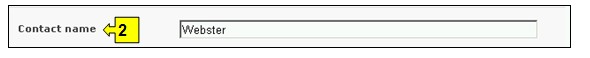
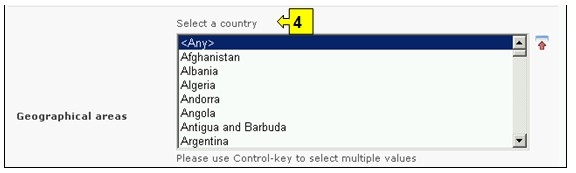
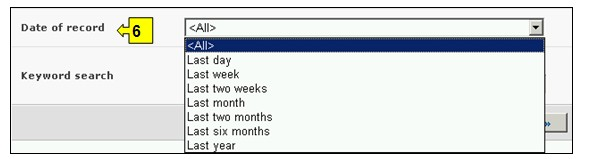

Ссылка: http://bch.cbd.int/database/organizations/
Глобальный и комплексный характер Картахенского протокола по биобезопасности затрагивает широкий круг участников его осуществления, не ограничиваясь только Сторонами данного соглашения. Поэтому Центральный портал МПБ содержит базу данных организаций и учреждений, деятельность которых связана с различными аспектами биобезопасности.
Поиск информации об организациях и учреждениях можно осуществлять, используя соответствующие ссылки в выпадающем меню раздела навигационной панели Finding Information (Поиск информации), или в меню в левой части страницы Поиск информации, или используя ссылку Организации и учреждения, связанные с различными аспектами биобезопасности в тексте страницы.

Рисунок 111
Поиск на этой странице позволяет получить сведения об организациях, связанных с различными аспектами биобезопасности, включая краткую информацию о деятельности этих организаций и их контактные данные.
На странице Поиска организаций и учреждений, связанных с различными аспектами биобезопасности предусмотрены семь полей с критериями уточнения поиска. Каждое из полей содержит выпадающее меню, позволяющее выбрать необходимый критерий. По умолчанию (если критерий не выбран) используется первый пункт меню. Справа от полей выбора критериев расположены кнопки, позволяющие перейти в режим выбора нескольких критериев. В этом режиме возможно добавление критериев поиска, путем выбора необходимых критериев при удерживании нажатой кнопки Ctrl (Control) на клавиатуре.
Рисунок 112
Меню поля 1 [Название организации] позволяет указать название организации для поиска.

Рисунок 113
Меню поля 2 [Контактные лица] позволяет осуществлять поиск по фамилии контактного лица.

Рисунок 114
Меню поля 3 [Тип организации] позволяет сузить круг поиска, выбрав одну или несколько перечисленных категорий.

Рисунок 115
В меню Географическое положение в поле 4 [Выберите страну] приведен список всех стран, позволяющий выбрать для поиска одну или несколько необходимых стран.

Рисунок 116
В меню Географическое положение в поле 5 [Выберите группу стран] приведен список групп стран, позволяющий выбрать для поиска одну или несколько необходимых групп. Список групп стран содержит все основные географические и политические группы, что позволяет осуществлять поиск сведений, предоставленных конкретной группой или группами стран.

Рисунок 117
Меню поля 6 [Дата предоставления сведений] позволяет сузить круг поиска сведений в соответствии с датой их предоставления МПБ. Выпадающее меню содержит ряд временных периодов для оптимизации поиска сведений, предоставленных за определенное время (например, за последний день, за последний месяц, за последний год и т.д.).

Рисунок 118
Поле 7 [Ключевые слова] предоставляет возможность использования ключевых слов для сужения круга поиска. Пользователь может использовать стандартный синтаксис (AND/OR) для комбинации ключевых слов или корневых частей слов (например, «Import OR Export», «координ* AND центр»). В результате поиска с использованием ключевых слов будут представлены только сведения, содержащие конкретные ключевые слова, но не их синонимы (например, в результате поиска с использованием ключевого слова «Maize» будут представлены сведения, содержащие только это слово, и не представлены, содержащие его синонимы «Corn» и «Zea mays»)

Рисунок 119
На странице поиска расположены три кнопки, инициирующие процедуру поиска. Кнопки Search Now (Искать), расположенные вверху и внизу формы поиска, позволяют осуществить поиск, используя выбранные критерии в полях функции поиска. Результаты поиска будут расположены в алфавитном порядке по названию страны (по умолчанию). Кнопка Browse all records (Просмотреть все записи) дает возможность просмотреть все сведения этой базы данных.

Рисунок 120
Страницы Результатов поиска имеют функцию сортировки, расположенную вверху страницы, которая может быть использована для сортировки результатов в соответствии с параметрами, имеющими отношение к данной категории информации. Необходимо отметить, что параметры сортировки результатов изменяются в зависимости от критериев поиска.

Рисунок 121
Пример. Предположим, что необходимо найти организации, которые работают с фермерами. Для этого необходимо ввести слова фермер* OR сельское хозяйство в поле Ключевые слова. В результате поиска будет выведен список организаций со ссылками в их названиях для получения детальной информации. Чтобы сузить круг поиска до организаций, связанных с частным сектором, необходимо выбрать промышленность в поле Типы организаций.

Рисунок 122

Рисунок 123